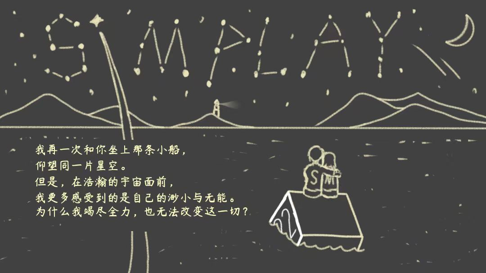
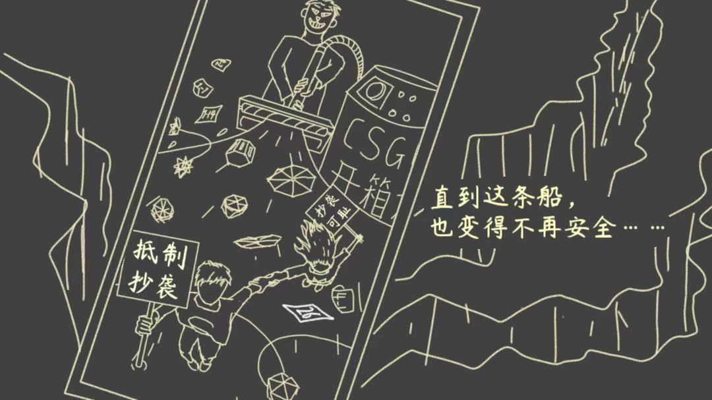
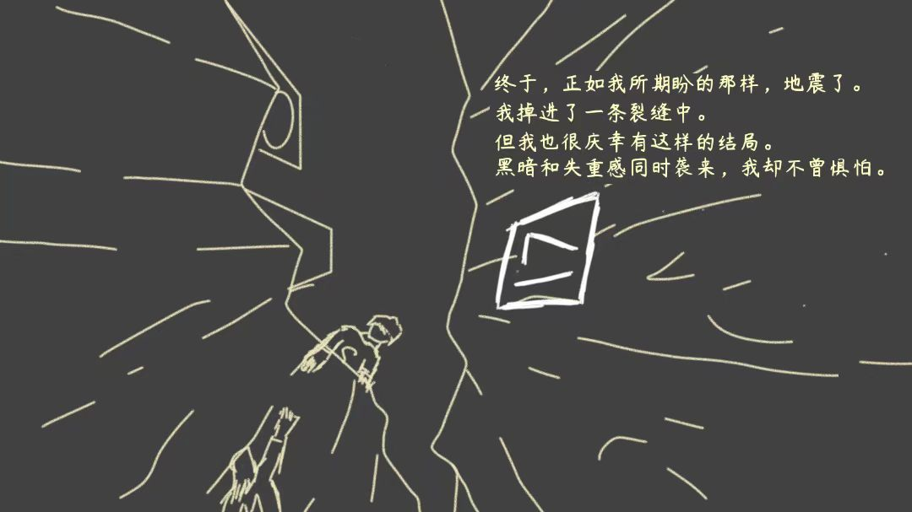
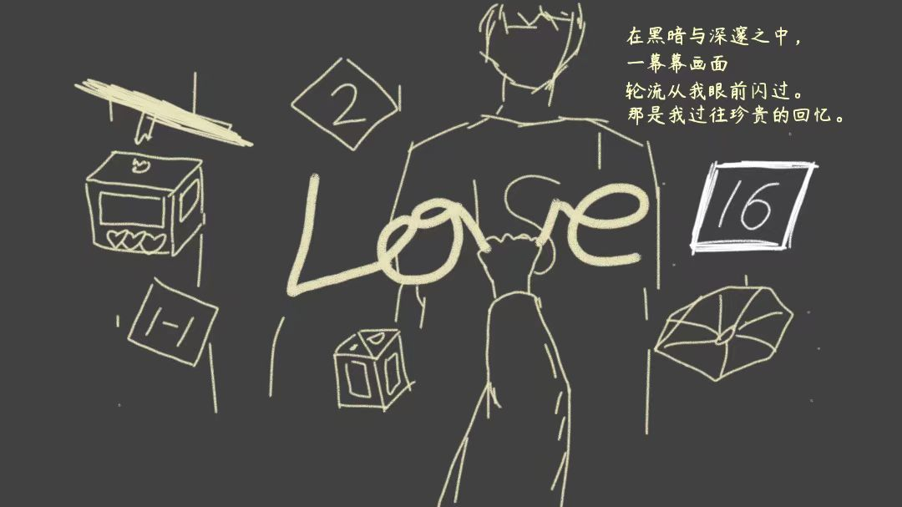
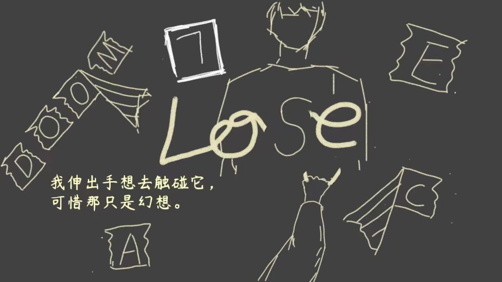

|  | 第16关我再一次和你坐上那条小船， 仰望同一片星空。 但是，在浩瀚的宇宙面前， 我更多感受到的是自己的渺小与无能。 为什么我竭尽全力，也无法改变这一切？ |
过关攻略（22次旋转）： 从左边跳下去→ 下下下左下→打开蓝→ 下左下下右下→打开黄→ 下下下右下→打开绿→ 下右下下左下→进门通关 （需要估测立方体边缘的位置） |
|
|  | 第17关直到这条船， 也变得不再安全…… （《花开有几何》被《CSGO开箱模拟器》抄袭，经Simplay曝光后，涉抄袭内容已被删除。 曝光帖链接：https://shequ.codemao.cn/community/544133 背景中部图片为曝光帖原图） |
过关攻略（26次旋转）： 右下下下下→打开蓝→ 右下下下下下→打开黄→ 下左下下→打开绿→ 右下下下→打开紫→ 下下左下下右下→进门通关 |
|
|  | 第18关终于，正如我所期盼的那样，地震了。 我掉进了一条裂缝中。 但我也很庆幸有这样的结局。 黑暗和失重感同时袭来，我却不曾惧怕。 |
过关攻略（17次旋转）： 下右下下左下下下下左→打开蓝色开关→ 极限操作跳回去→右下左下下下下→进门通关 |
|
|  | 第19关在黑暗与深邃之中， 一幕幕画面 轮流从我眼前闪过。 那是我过往珍贵的回忆。 （从第19关开始，视角由第三人称切换为小M第一人称。 小M伸手抓住的是第4关小S写下的Love文字。 注意背景元素：《几何缆车》中坠落的缆车,《花开有几何》中的关卡编号、灯盏、莲叶） |
过关攻略（16次旋转）： 打开蓝→打开黄→打开绿→关上黄→打开紫→打开黄→关上绿→关上蓝→进门通关 整个过程一共绕着立方体转了4圈，共16次旋转 |
|
|  | 第20关我伸出手想去触碰它， 可惜那只是幻想。 （小M把Love中的v掰了下来，剩下的字母与小S衣服上的字母S共同组成了单词Lose 左边的四个字母DOOM和周围的三个字母AEC，来自第2关猫站的招牌CODEMAO） |
过关攻略（7次旋转）： 左下下右→打开蓝→下右下→打开黄→进门通关 |
|